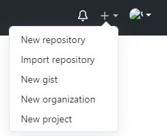
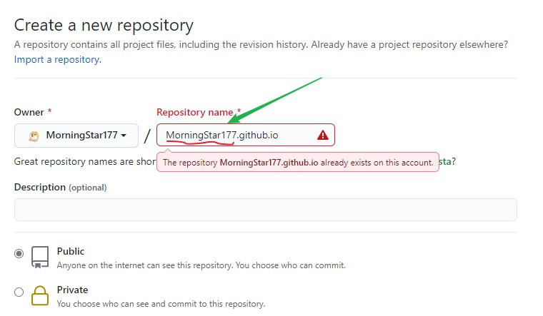
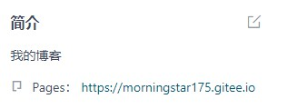

使用github/gitee pages服务搭建博客的好处有：
- 全是静态文件，访问速度快；
- 免费方便，不用花一分钱就可以搭建一个自由的个人博客，不需要服务器不需要后台；
- 可以绑定自己的域名；
- 数据安全，基于github的版本管理，想恢复到哪个历史版本都行；
- 博客内容可以轻松打包、转移、发布到其它平台；
- = =
部署到远端
github部署的方式
- 优点：部署比较简单，且不用频繁的更新部署
- 缺点：访问速度相对于gitee较慢，每次hexo d比较慢。
登录github后，点击右上角的＋，然后点击new repository

说明：下面这张图片中出现红色是因为我之前已经用这个地址申请过一个仓库，波浪线处尽量与前面的名字一样，后面的.github.io固定。然后拉到底部点击create repository


复制仓库地址后后打开站点配置文件，找到deploy字段，按下图操作。

此时我们需要在博客根目录下打开命令行，装一个部署git的插件(已经切换到淘宝镜像源的可用cnpm命令)
npm install –save hexo-deployer-git
插件安装完成后，可以通过命令：
1 | hexo d |
就可以部署到github，此时打开仓库就会有内容了。
直接把你的网址中下面图片中蓝色部分拿出来，输入到浏览器中即可访问你的静态博客页面。

注：1. 刷新不出博客页面稍等两分钟即可 2.每次部署可以：hexo d -m “提交的说明”
gitee（码云）部署到远端
- 优点：访问速度快，中文页面友好
- 缺点：每次部署后都需要服务中点击更新部署
与github部署方式大同小异，登录gitee后点击右上角的加号，新建仓库

仓库建好后，复制仓库地址到站点配置文件_config.yml中

此时我们需要在博客根目录下打开命令行，装一个部署git的插件(已经切换到淘宝镜像源的可用cnpm命令)
npm install –save hexo-deployer-git
插件安装完成后，可以通过命令：
1 | hexo d |
命令执行完毕后，刷新仓库页面，此时仓库就会有内容，点击仓库的服务


这个地址就是你的个人静态博客地址，也可以打开博客部署到的仓库查看地址，点击可直接访问。

注意：每次执行完命令
1 | hexo d -m "提交说明" |
需要到仓库服务中点开Gitee Pages，然后点击更新等一两分钟才能更新静态博客。
如果有什么问题或者技术交流，欢迎在下方发布渠道二维码联系我或者文章底部留言。